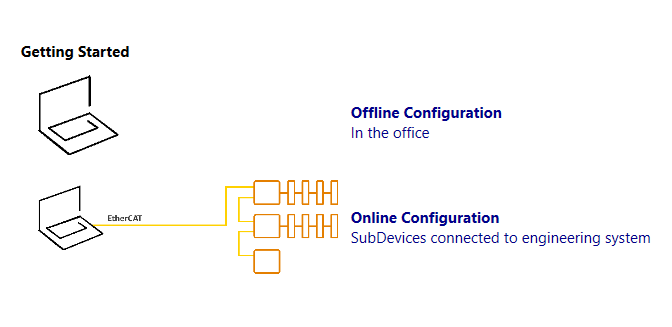

After selecting Configure on the EtherCAT bus in EcoStruxure Automation Expert, EtherCAT Configuration Tool opens for you to start configuring your EtherCAT network.
The opening view of EtherCAT Configuration Tool then depends on what configuration is already available on EcoStruxure Automation Expert.
If there is:
Already one configuration of the EtherCAT network on EcoStruxure Automation Expert, then EtherCAT Configuration Tool opens this configuration for you to continue working on it.
No configuration of the EtherCAT network on EcoStruxure Automation Expert, then EtherCAT Configuration Tool shows the following sections in the Device Editor pad:
Recent Projects; Lists the last five opened projects done in EtherCAT Configuration Tool. Clicking on one project in the list opens that project where it was last saved.
Add MainDevice Unit; Lists of available Main-device units. Clicking on one Main-device unit opens the Select MainDevice Unit dialog box.
Getting Started; To enhances your experience, EtherCAT Configuration Tool comes with a start page where you can choose between:
